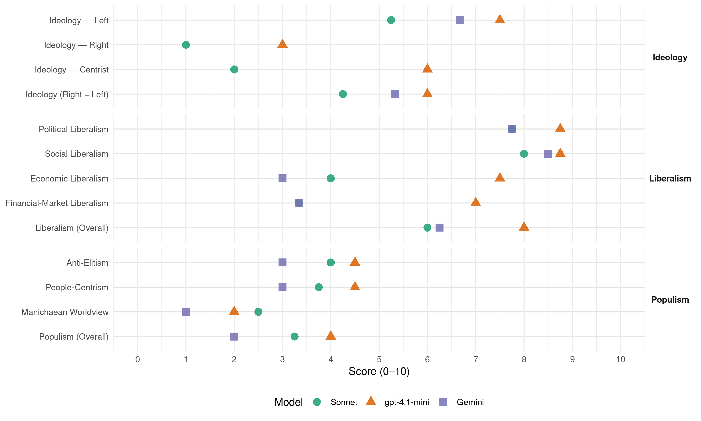

groen! (Belgium, 2019)
manifesto_id 21112_201905
Get full text: This site shows derived annotations and short verbatim quotes only. The full manifesto text is © Manifesto Project / WZB — obtain it via manifesto-project.wzb.eu using the manifesto_id above.
Headline scores
| Dimension | Sonnet | gpt-4.1-mini | Gemini |
|---|---|---|---|
| Populism (Overall) | 3.2 | 4.0 | 2.0 |
| Anti-Elitism | 4.0 | 4.5 | 3.0 |
| People-Centrism | 3.8 | 4.5 | 3.0 |
| Manichaean Worldview | 2.5 | 2.0 | 1.0 |
| Ideology (Right − Left) | 4.2 | 6.0 | 5.3 |
| Liberalism (Overall) | 6.0 | 8.0 | 6.2 |
| Political Liberalism | 7.8 | 8.8 | 7.8 |
| Social Liberalism | 8.0 | 8.8 | 8.5 |
| Economic Liberalism | 4.0 | 7.5 | 3.0 |
| Financial-Market Liberalism | 3.3 | 7.0 | 3.3 |
Evidence per dimension
Economic Liberalism
Gemini · score 3.0 · verified · chunk 1
“Verkoop onder de kostprijs verbieden we”
marktmacht te geven ten opzichte van de voedselverwerkers en supermarktketens. Zo zorgen we voor betere afzetprijzen. Verkoop onder de kostprijs verbieden we. We stimuleren alternatieven voor vleesen
Gemini · score 6.0 · mixed · chunk 2
“vereenvoudigen het statuut voor startende zelfstandigen”
We verminderen de administratieve rompslomp voor zelfstandigen en kmo’s. Administratieve verplichtingen verlopen zoveel mogelijk digitaal en kosteloos. Gegevens aan de overhead bezorgen is maar eenmalig nodig. We vereenvoudigen het statuut voor startende zelfstandigen en geven starters voldoende ondersteuning.
Gemini · score 3.0 · verified · chunk 3
“maximale loonspanning tussen het hoogste en laagste loon”
Sociale partners leggen in sectorale en bedrijfscao’s vast wat de maximale loonspanning tussen het hoogste en laagste loon in een bedrijf mag zijn
Gemini · score 3.0 · verified · chunk 4
“vrijhandel die gereguleerd is op sociaal”
We pleiten voor eerlijke vrijhandel die gereguleerd is op sociaal, ecologisch en ethisch
gpt-4.1-mini · score 8.0 · verified · chunk 1
“markt, concurrentie, ondernemerschap, belasting, handel, regulering, privatisering”
…markt, concurrentie, ondernemerschap, belasting, handel, regulering, privatisering, …
gpt-4.1-mini · score 7.0 · verified · chunk 2
“verlagen de lasten op arbeid en concentreren de verlaging bij de laagste inkomens”
We verlagen de lasten op arbeid en concentreren de verlaging bij de laagste inkomens. Werkgevers- en werknemersbijdragen maken we progressief. De loonkosten en de koopkracht evolueren daardoor het meest gunstig voor de lage inkomens.
gpt-4.1-mini · score 7.0 · verified · chunk 3
“We versterken de sociale economie en zorgen voor extra plaatsen in arbeidszorg, maatwerkbedrijven en de lokale diensteneconomie”
We investeren daarom meer in de sociale economie en opleidings- en tewerkstellingsinitiatieven. Die sociale tewerkstelling is zowel voor de betrokken werknemers als voor de samenleving een investering waarvoor de baten zowel vanuit menselijk als economisch perspectief de kosten overtreffen. Meer mensen kunnen iets betekenen in de sociale economie, en daarom zorgen we voor extra plaatsen in arbeidszorg, maatwerkbedrijven en de lokale diensteneconomie.
gpt-4.1-mini · score 8.0 · verified · chunk 4
“We pleiten voor eerlijke vrijhandel die gereguleerd is op sociaal, ecologisch en ethisch vlak”
3. Buitenlands beleid en handel Mensenrechten en de grenzen van onze planeet blijven de rode draad in het Belgisch buitenlands beleid. We pleiten voor eerlijke vrijhandel die gereguleerd is op sociaal, ecologisch en ethisch vlak. We sluiten internationale handelsakkoorden af waarbij alle deelnemende landen hun kwaliteitsstandaarden rond productie, mens en milieu (geleidelijk) optrekken tot op het niveau van de best presterende handelspartner.
Sonnet · score 4.0 · verified · chunk 1
“mededingingsbeleid aanpassen om boeren meer marktmacht”
We passen het mededingingsbeleid aan om boeren meer marktmacht te geven ten opzichte van de voedselverwerkers en supermarktketens.
Sonnet · score 5.0 · mixed · chunk 2
“lasten op arbeid naar grondstoffen, vervuiling en afval”
Door de lasten op arbeid te verschuiven naar grondstoffen, vervuiling en afval krijgen afgedankte producten terug een waarde en wordt herstellen weer interessant.
Sonnet · score 4.0 · verified · chunk 3
“progressieve belasting en sociale bijdrage”
Alle inkomsten uit arbeid voegen we samen en hierop betaal je dan een progressieve belasting en sociale bijdrage.
Sonnet · score 5.0 · mixed · chunk 4
“eerlijke vrijhandel die gereguleerd is op sociaal, ecologisch”
We pleiten voor eerlijke vrijhandel die gereguleerd is op sociaal, ecologisch en ethisch vlak. We sluiten internationale handelsakkoorden af waarbij alle deelnemende landen hun kwaliteitsstandaarden optrekken
Financial-Market Liberalism
Gemini · score 2.0 · verified · chunk 1
“Speculeren op voedingsproducten moet verdwijnen”
voedselverspilling met 30% terugdringen tegen 2025. Voedsel weggooien omwille van het uitzicht verbieden we. Speculeren op voedingsproducten moet verdwijnen. Voedsel dient in de eerste plaats
Gemini · score 5.0 · verified · chunk 2
“financiële toezichthouders moeten verdere stappen zetten”
In een divers bankenlandschap is ruimte voor klassieke, coöperatieve en publieke banken van diverse omvang. De financiële toezichthouders moeten verdere stappen zetten om risico›s te minimaliseren en een betere bescherming te voorzien als het toch fout loopt.
Gemini · score 3.0 · verified · chunk 4
“speculatieve geldstromen scheiden we strikt”
Geldstromen verbonden aan de reële economie scheiden we strikt van speculatieve geldstromen.
gpt-4.1-mini · score 7.0 · verified · chunk 1
“financiën, bank, kapitaal, krediet, investeren, markt, monetaire, rente, valuta, schuld, effecten”
…financiën, bank, kapitaal, krediet, investeren, markt, monetaire, rente, valuta, schuld, effecten, …
gpt-4.1-mini · score 7.0 · verified · chunk 2
“Baselnormen moet kordaat gebeuren”
De toepassing van de Baselnormen moet kordaat gebeuren. Grote Belgische banken in buitenlandse handen moeten voldoende buffers aanhouden op Belgisch niveau teneinde de stabiliteit van het Belgisch financieel landschap te verzekeren.
gpt-4.1-mini · score 7.0 · verified · chunk 4
“Om een volgende financiële crisis te voorkomen, krijgen overheden en burgers weer vat op financiële stromen”
2. Een sociaal rechtvaardige en sterke Europese Unie We willen een Europa van mens en milieu en geen Europa dat zich beperkt tot markt en munt. Een Europa dat haar burgers beschermt en niet verarmt. Uitgerekend daarom talmen we niet langer met de uitbouw van een sociaal Europa. Dat gaat gepaard met een duurzame investeringsstrategie voor jobs en welvaart. De strijd tegen belastingfraude en -ontwijking voeren we op. Om een volgende financiële crisis te voorkomen, krijgen overheden en burgers weer vat op financiële stromen.
Sonnet · score 4.0 · verified · chunk 1
“progressieve vermogensrendementsheffing”
De hogere bijdrage uit grote vermogens realiseren we door een progressieve vermogensrendementsheffing. We vervangen daarmee de huidige vermogensfiscaliteit.
Sonnet · score 4.0 · mixed · chunk 2
“financiële transactietaks voeren we in”
Een financiële transactietaks voeren we in met een Europese kopgroep. Die belasting vermijdt computergestuurde transacties op de beurs, waarbij de snelheid en de frequentie van het verhandelen een louter speculatief karakter hebben.
Sonnet · score 3.0 · verified · chunk 3
“pensioen minder blootstaat aan de risico’s van de beurzen”
Dat is veiliger, omdat je pensioen zo minder blootstaat aan de risico’s van de beurzen. Je pensioen kan je opnemen na 42 loopbaanjaren.
Sonnet · score 3.0 · verified · chunk 4
“speculatieve geldstromen. Dat beveiligt het geld van de belastingbetaler”
Geldstromen verbonden aan de reële economie scheiden we strikt van speculatieve geldstromen. Dat beveiligt het geld van de belastingbetaler. Zo voorkomen we dat publiek geld moet dienen om banken van het faillissement te redden.
Political Liberalism
Gemini · score 7.0 · verified · chunk 1
“dierenrechten op in de Grondwet”
met voortrekkers als Zweden en Finland, en nemen dierenrechten op in de Grondwet. 1. Een gezond leefmilieu voor alle
Gemini · score 7.0 · verified · chunk 2
“verantwoording afleggen bij de Vlaamse regering en het parlement”
moeten de participatiemaatschappijen voldoende verantwoording afleggen bij de Vlaamse regering en het parlement. De Brusselse investeringsmaatschappij
Gemini · score 8.0 · verified · chunk 3
“De scheiding van de machten garandeert onze rechten”
De stem van het volk valt niet te herleiden tot een eenheidsgeluid. De scheiding van de machten garandeert onze rechten en vrijheden.
Gemini · score 9.0 · verified · chunk 4
“onze democratische rechtsstaat”
We zijn een overtuigd verdediger van onze democratische rechtsstaat. Vandaag ligt die
gpt-4.1-mini · score 9.0 · verified · chunk 1
“democratie, rechten, verkiezingen, rechtbanken, media”
…politieke rechten. Topic check: a verbatim quote for lib_political must mention democratie, rechten, verkiezingen, rechtbanken, media, government, parliament, or a related political-institution term. …
gpt-4.1-mini · score 8.0 · verified · chunk 2
“democratisering vergt ingrijpende veranderingen”
Hoger onderwijs en werkgevers vragen steeds meer multi- en interdisciplinaire vorming. Democratisering vergt ingrijpende veranderingen zoals een divers personeelsbestand en een curriculumherziening.
gpt-4.1-mini · score 9.0 · verified · chunk 3
“de democratische rechtsstaat is het best te verdedigen door voluit te geloven in de kracht van een open samenleving”
Meningen mogen botsen. De grens ligt bij het aanzetten tot haat, geweld of discriminatie. In onze democratie is er plaats voor iedereen die zich binnen die grenzen beweegt. De stem van het volk valt niet te herleiden tot een eenheidsgeluid. De scheiding van de machten garandeert onze rechten en vrijheden. We waken ervoor dat de rechterlijke macht niet inboet aan bevoegdheden ten voordele van de uitvoerende macht. We zijn alert voor maatregelen die de privacy van burgers in het gedrang brengen. Iedere screening moet met wettelijke waarborgen zijn omkleed. Onzegrondwet geeft richting aan onze samenleving en formuleert de belangrijkste uitgangspunten. Ze vormt een kompas voor wie hier geboren is en voor nieuwkomers. Onze grondwet is al erg rijk, maar we willen ze nog versterken. Voor het eerst in de Belgische geschiedenis brengen we burgers en politici samen om te schrijven aan een preambule van de grondwet.
gpt-4.1-mini · score 9.0 · verified · chunk 4
“We zijn een overtuigd verdediger van onze democratische rechtsstaat”
11 VERTROUWEN GEVEN AAN RECHTSSTAAT EN DEMOCRATIE We zijn een overtuigd verdediger van onze democratische rechtsstaat. Vandaag ligt die vanuit verschillende kanten onder vuur. De confrontatie met terreur, geweld en xenofobie plaatst ons als samenleving tegenover degenen die onze waarden en onze samenleving willen ontwrichten.
Sonnet · score 7.0 · verified · chunk 1
“Een onafhankelijke klimaatraad ziet erop toe”
Een onafhankelijke klimaatraad ziet erop toe dat de exitstrategie effectief wordt uitgevoerd. Lokale overheden zijn belangrijke partners in het klimaatbeleid.
Sonnet · score 7.0 · verified · chunk 2
“onafhankelijkheid van het wetenschappelijk onderzoek”
We waarborgen de onafhankelijkheid van het wetenschappelijk onderzoek. Universiteiten en hogescholen blijven de kritische kenniscentra van de samenleving.
Sonnet · score 8.0 · verified · chunk 3
“scheiding van de machten garandeert onze rechten”
De scheiding van de machten garandeert onze rechten en vrijheden. We waken ervoor dat de rechterlijke macht niet inboet aan bevoegdheden ten voordele van de uitvoerende macht.
Sonnet · score 9.0 · verified · chunk 4
“scheiding van de machten garandeert onze rechten en vrijheden”
De stem van het volk valt niet te herleiden tot een eenheidsgeluid. De scheiding van de machten garandeert onze rechten en vrijheden. We waken ervoor dat de rechterlijke macht niet inboet aan bevoegdheden
Liberalism (Overall)
Gemini · score 5.0 · verified · chunk 1
“rechten automatisch toe. Hetleefloon wordt”
alle uitkeringen onder de armoedegrens op en kennen sociale rechten automatisch toe. Hetleefloon wordt onvoorwaardelijk. We schakelen proactieve rechtenverkenners in.
Gemini · score 7.0 · verified · chunk 2
“respecteren van mensenrechten en de bescherming”
Bedrijven en overheden dragen verantwoordelijkheid voor het respecteren van mensenrechten en de bescherming van het milieu. We zorgen
Gemini · score 7.0 · verified · chunk 3
“De scheiding van de machten garandeert onze rechten”
De stem van het volk valt niet te herleiden tot een eenheidsgeluid. De scheiding van de machten garandeert onze rechten en vrijheden.
Gemini · score 6.0 · verified · chunk 4
“onze democratische rechtsstaat”
We zijn een overtuigd verdediger van onze democratische rechtsstaat. Vandaag ligt die
gpt-4.1-mini · score 8.0 · verified · chunk 1
“democratie, rechten, markt, concurrentie, financiën”
…politieke rechten, sociale rechten, marktwerking, concurrentie, financiële markten…
gpt-4.1-mini · score 8.0 · verified · chunk 2
“verlagen de lasten op arbeid en concentreren de verlaging bij de laagste inkomens”
We verlagen de lasten op arbeid en concentreren de verlaging bij de laagste inkomens. Werkgevers- en werknemersbijdragen maken we progressief. De loonkosten en de koopkracht evolueren daardoor het meest gunstig voor de lage inkomens.
gpt-4.1-mini · score 8.0 · verified · chunk 3
“de democratische rechtsstaat is het best te verdedigen door voluit te geloven in de kracht van een open samenleving”
Meningen mogen botsen. De grens ligt bij het aanzetten tot haat, geweld of discriminatie. In onze democratie is er plaats voor iedereen die zich binnen die grenzen beweegt. De stem van het volk valt niet te herleiden tot een eenheidsgeluid. De scheiding van de machten garandeert onze rechten en vrijheden. We waken ervoor dat de rechterlijke macht niet inboet aan bevoegdheden ten voordele van de uitvoerende macht. We zijn alert voor maatregelen die de privacy van burgers in het gedrang brengen. Iedere screening moet met wettelijke waarborgen zijn omkleed. Onzegrondwet geeft richting aan onze samenleving en formuleert de belangrijkste uitgangspunten. Ze vormt een kompas voor wie hier geboren is en voor nieuwkomers. Onze grondwet is al erg rijk, maar we willen ze nog versterken. Voor het eerst in de Belgische geschiedenis brengen we burgers en politici samen om te schrijven aan een preambule van de grondwet.
gpt-4.1-mini · score 8.0 · verified · chunk 4
“We zijn een overtuigd verdediger van onze democratische rechtsstaat”
11 VERTROUWEN GEVEN AAN RECHTSSTAAT EN DEMOCRATIE We zijn een overtuigd verdediger van onze democratische rechtsstaat. Vandaag ligt die vanuit verschillende kanten onder vuur. De confrontatie met terreur, geweld en xenofobie plaatst ons als samenleving tegenover degenen die onze waarden en onze samenleving willen ontwrichten.
Sonnet · score 5.0 · verified · chunk 1
“rechtvaardige fiscaliteit op alle beleidsniveaus”
We laten België een voortrekkersrol vervullen op Europees niveau en maken een duidelijke keuze voor eerlijke fiscaliteit op alle beleidsniveaus.
Sonnet · score 6.0 · verified · chunk 2
“transparant en ethisch aanbod voorzien”
Een cruciale rol voor de transitie is ook weggelegd voor de financiële sector. Die moet een transparant en ethisch aanbod voorzien en zelf op een veilige manier handelen, ten dienste van de samenleving.
Sonnet · score 6.0 · verified · chunk 3
“strijd tegen discriminatie, homofobie, seksisme”
De strijd tegen discriminatie, homofobie, seksisme en racisme plaatsen we bovenaan de agenda. We bundelen de krachten met iedereen die werkt aan minder uitsluiting en meer gelijkheid.
Sonnet · score 7.0 · verified · chunk 4
“scheiding van de machten garandeert onze rechten en vrijheden”
De scheiding van de machten garandeert onze rechten en vrijheden. We waken ervoor dat de rechterlijke macht niet inboet aan bevoegdheden ten voordele van de uitvoerende macht.
Anti-Elitism
Gemini · score 3.0 · verified · chunk 1
“Grote fraudeurs ontsnappen te vaak”
en een strafrechtelijke bevoegdheid. Minnelijke schikkingen dienen door een rechter te worden gecontroleerd. Grote fraudeurs ontsnappen te vaak aan de gepaste straf dankzij de afkoopwet.
Gemini · score 3.0 · verified · chunk 2
“schoolvoorbeeld van klassenjustitie”
wet op minnelijke schikkingen. De huidige praktijken zijn een schoolvoorbeeld van klassenjustitie. We verhogen de termijn
Gemini · score 3.0 · verified · chunk 3
“Bestuurders, directeurs en CEO’s ontvangen soms bedragen die niet in proportie staan”
In een aantal bedrijven en overheidsinstellingen is de loonspanning tussen het hoogste en het laagste loon te breed. Bestuurders, directeurs en CEO’s ontvangen soms bedragen die niet in proportie staan tot de omvang van hun prestaties.
gpt-4.1-mini · score 7.0 · verified · chunk 2
“multinationals met winsten schuiven om slechts een fractie te betalen”
We beteugelen het gebruik van belastingparadijzen. Zo vermijden we dat vermogenden hun rijkdom verbergen en multinationals met winsten schuiven om slechts een fractie te betalen van de percentages die gewone burgers en lokale ondernemers bijdragen.
gpt-4.1-mini · score 2.0 · verified · chunk 4
“We kiezen voor transparante en eerlijke politiek”
5. Transparante en eerlijke politiek die iedereen een stem geeft We kiezen voor transparante en eerlijke politiek. Samusocial, de intercommunales, politieke benoemingen, het thema blijft meer dan ooit actueel.
Sonnet · score 4.0 · verified · chunk 1
“Gewone mensen en kleine ondernemingen betalen het gelag”
Voor het opsporen en bestraffen van fraude hanteert de overheid twee maten en gewichten. Gewone mensen en kleine ondernemingen betalen het gelag.
Sonnet · score 5.0 · verified · chunk 2
“multinationals met winsten schuiven om slechts een fractie te betalen”
We beteugelen het gebruik van belastingparadijzen. Zo vermijden we dat vermogenden hun rijkdom verbergen en multinationals met winsten schuiven om slechts een fractie te betalen van de percentages die gewone burgers en lokale ondernemers bijdragen.
Sonnet · score 4.0 · verified · chunk 3
“CEO’s riante vergoedingen opstrijken”
We beletten dat CEO’s riante vergoedingen opstrijken en bestuurders royale zitpenningen uitbetaald krijgen terwijl medewerkers aan het minimumloon werken.
Sonnet · score 3.0 · verified · chunk 4
“grote bedrijven en investeerders de juridische mogelijkheden”
geven akkoorden als de TTIP en CETA grote bedrijven en investeerders de juridische mogelijkheden om de uitkomst van democratische besluitvorming in het algemeen belang aan te vechten via private rechtspraak
Ideology — Centrist
gpt-4.1-mini · score 6.0 · verified · chunk 2
“iedereen eerlijk te laten bijdragen”
We creëren financiële ruimte voor investeringen en lasten verlagingen door iedereen eerlijk te laten bijdragen. We laten België een voortrekkersrol vervullen op Europees niveau en maken een duidelijke keuze voor eerlijke fiscaliteit op alle beleidsniveaus.
gpt-4.1-mini · score 6.0 · verified · chunk 4
“We waarderen de rol van een kritisch en onafhankelijk middenveld”
We geven ambtenaren het nodige vertrouwen en autonomie om hun rol van schakel tussen burger en overheid ten volle op te nemen. We waarderen de rol van een kritisch en onafhankelijk middenveld.
Sonnet · score 2.0 · verified · chunk 1
“iedereen eerlijk te laten bijdragen”
We creëren financiële ruimte voor investeringen en lasten verlagingen door iedereen eerlijk te laten bijdragen.
Sonnet · score 2.0 · verified · chunk 2
“eerlijke bijdrage van de diamantbedrijven”
Het uitzonderlijke fiscaal gunstregime dat werd toegekend aan de diamantsector (de karaattaks) passen we aan voor een eerlijkere bijdrage van de diamantbedrijven.
Sonnet · score 2.0 · verified · chunk 3
“Loopbaanbeleid wordt menselijker, eerlijker”
Loopbaanbeleid wordt menselijker, eerlijker en gezonder. Op de arbeidsmarkt integreren we meer mensen uit kansengroepen.
Sonnet · score 2.0 · verified · chunk 4
“Eerlijke politiek en heldere structuren zorgen voor meer vertrouwen”
Eerlijke politiek en heldere structuren zorgen voor meer vertrouwen bij de burger.
Ideology — Left
Gemini · score 7.0 · verified · chunk 1
“lastenverschuiving van arbeid naar vermogen”
Je startpositie in het leven is nog te bepalend voor je levensstandaard. We gaan dat tegen door onder meer een lastenverschuiving van arbeid naar vermogen. Inkomsten uit arbeid weerspiegelen
Gemini · score 6.0 · verified · chunk 2
“vermijden we dat vermogenden hun rijkdom verbergen”
We beteugelen het gebruik van belastingparadijzen. Zo vermijden we dat vermogenden hun rijkdom verbergen en multinationals met winsten schuiven
Gemini · score 7.0 · verified · chunk 3
“een progressief model voor alle werkenden”
We trekken niet enkel de bescherming gelijk, maar ook de bijdragestructuur. We kiezen voor een progressief model voor alle werkenden, waarbij de socialezekerheidsbijdrage met het inkomen toeneemt.
gpt-4.1-mini · score 8.0 · verified · chunk 2
“verlagen de lasten op arbeid en concentreren de verlaging bij de laagste inkomens”
We verlagen de lasten op arbeid en concentreren de verlaging bij de laagste inkomens. Werkgevers- en werknemersbijdragen maken we progressief. De loonkosten en de koopkracht evolueren daardoor het meest gunstig voor de lage inkomens.
gpt-4.1-mini · score 7.0 · verified · chunk 4
“We pleiten voor eerlijke vrijhandel die gereguleerd is op sociaal, ecologisch en ethisch vlak”
3. Buitenlands beleid en handel Mensenrechten en de grenzen van onze planeet blijven de rode draad in het Belgisch buitenlands beleid. We pleiten voor eerlijke vrijhandel die gereguleerd is op sociaal, ecologisch en ethisch vlak. We sluiten internationale handelsakkoorden af waarbij alle deelnemende landen hun kwaliteitsstandaarden rond productie, mens en milieu (geleidelijk) optrekken tot op het niveau van de best presterende handelspartner.
Sonnet · score 5.0 · verified · chunk 1
“lastenverschuiving van arbeid naar vermogen”
We gaan dat tegen door onder meer een lastenverschuiving van arbeid naar vermogen. Inkomsten uit arbeid weerspiegelen in grote mate de eigen inspanningen.
Sonnet · score 6.0 · verified · chunk 2
“Taxshift van arbeid naar vermogens”
2. Rechtvaardige fiscaliteit: Taxshift van arbeid naar vermogens. We verlagen de lasten op arbeid en concentreren de verlaging bij de laagste inkomens.
Sonnet · score 6.0 · verified · chunk 3
“Een hogerminimumloon”
Een hogerminimumloon. Tussen 2010 en 2018 is het minimumloon in reële termen achteruitgegaan in België.
Sonnet · score 4.0 · verified · chunk 4
“strijd tegen belastingfraude en -ontwijking voeren we op”
Uitgerekend daarom talmen we niet langer met de uitbouw van een sociaal Europa. De strijd tegen belastingfraude en -ontwijking voeren we op.
Ideology (Right − Left)
Gemini · score 6.0 · verified · chunk 1
“lastenverschuiving van arbeid naar vermogen”
Je startpositie in het leven is nog te bepalend voor je levensstandaard. We gaan dat tegen door onder meer een lastenverschuiving van arbeid naar vermogen. Inkomsten uit arbeid weerspiegelen
Gemini · score 5.0 · verified · chunk 2
“vermijden we dat vermogenden hun rijkdom verbergen”
We beteugelen het gebruik van belastingparadijzen. Zo vermijden we dat vermogenden hun rijkdom verbergen en multinationals met winsten schuiven
Gemini · score 5.0 · verified · chunk 3
“een progressief model voor alle werkenden”
We trekken niet enkel de bescherming gelijk, maar ook de bijdragestructuur. We kiezen voor een progressief model voor alle werkenden, waarbij de socialezekerheidsbijdrage met het inkomen toeneemt.
gpt-4.1-mini · score 7.0 · verified · chunk 2
“verlagen de lasten op arbeid en concentreren de verlaging bij de laagste inkomens”
We verlagen de lasten op arbeid en concentreren de verlaging bij de laagste inkomens. Werkgevers- en werknemersbijdragen maken we progressief. De loonkosten en de koopkracht evolueren daardoor het meest gunstig voor de lage inkomens.
gpt-4.1-mini · score 5.0 · verified · chunk 4
“We kiezen voor transparante en eerlijke politiek”
5. Transparante en eerlijke politiek die iedereen een stem geeft We kiezen voor transparante en eerlijke politiek. Samusocial, de intercommunales, politieke benoemingen, het thema blijft meer dan ooit actueel.
Sonnet · score 4.0 · verified · chunk 1
“lastenverschuiving van arbeid naar vermogen”
We gaan dat tegen door onder meer een lastenverschuiving van arbeid naar vermogen. Inkomsten uit arbeid weerspiegelen in grote mate de eigen inspanningen.
Sonnet · score 5.0 · verified · chunk 2
“Taxshift van arbeid naar vermogens”
2. Rechtvaardige fiscaliteit: Taxshift van arbeid naar vermogens. We verlagen de lasten op arbeid en concentreren de verlaging bij de laagste inkomens.
Sonnet · score 5.0 · verified · chunk 3
“Een hogerminimumloon”
Een hogerminimumloon. Tussen 2010 en 2018 is het minimumloon in reële termen achteruitgegaan in België.
Sonnet · score 3.0 · verified · chunk 4
“strijd tegen belastingfraude en -ontwijking voeren we op”
Uitgerekend daarom talmen we niet langer met de uitbouw van een sociaal Europa. De strijd tegen belastingfraude en -ontwijking voeren we op.
Ideology — Right
gpt-4.1-mini · score 3.0 · verified · chunk 4
“De confrontatie met terreur, geweld en xenofobie plaatst ons als samenleving tegenover degenen die onze waarden en onze samenleving willen ontwrichten”
11 VERTROUWEN GEVEN AAN RECHTSSTAAT EN DEMOCRATIE We zijn een overtuigd verdediger van onze democratische rechtsstaat. Vandaag ligt die vanuit verschillende kanten onder vuur. De confrontatie met terreur, geweld en xenofobie plaatst ons als samenleving tegenover degenen die onze waarden en onze samenleving willen ontwrichten.
Sonnet · score 1.0 · verified · chunk 1
“geen ruimte voor regionale luchthavens”
Er is geen ruimte voor regionale luchthavens te midden van woonwijken.
Sonnet · score 1.0 · verified · chunk 3
“clandestiene arbeidsmigranten”
Sommige specifieke groepen zijn extra kwetsbaar en lopen meer dan andere groepen het risico op uitbuiting. Denk aan clandestiene arbeidsmigranten.
Sonnet · score 1.0 · verified · chunk 4
“Migratie bestrijden we niet”
Migratie bestrijden we niet. Dat heeft geen enkele zin. We voorkomen massale migratie door de inperking van aanhoudende conflicten
Manichaean Worldview
Gemini · score 1.0 · verified · chunk 2
“Grote fraudeurs ontsnappen te vaak”
strafrechtelijke bevoegdheid toegekend. Zo kan de dienst snel en daadkrachtig optreden. We laten BBIambtenaren inschakelen bij het parket met het statuut van gerechtelijke officier. We onderwerpen het charter van de belastingplichtige aan een grondige evaluatie. Het charter is achterhaald en staat een efficiënte fraudebestrijding in de weg. Grote fraudeurs ontsnappen te vaak aan de gepaste straf dankzij de afkoopwet.
gpt-4.1-mini · score 5.0 · mixed · chunk 2
“Grote fraudeurs ontsnappen te vaak aan de gepaste straf”
Grote fraudeurs ontsnappen te vaak aan de gepaste straf dankzij de afkoopwet. We elimineren de mogelijkheid om het proces af te kopen uit de wet op minnelijke schikkingen en we verlengen de verjaringstermijnen.
gpt-4.1-mini · score 2.0 · verified · chunk 4
“De confrontatie met terreur, geweld en xenofobie plaatst ons als samenleving tegenover degenen die onze waarden en onze samenleving willen ontwrichten”
11 VERTROUWEN GEVEN AAN RECHTSSTAAT EN DEMOCRATIE We zijn een overtuigd verdediger van onze democratische rechtsstaat. Vandaag ligt die vanuit verschillende kanten onder vuur. De confrontatie met terreur, geweld en xenofobie plaatst ons als samenleving tegenover degenen die onze waarden en onze samenleving willen ontwrichten.
Sonnet · score 2.0 · verified · chunk 1
“LuxLeaks, SwissLeaks, Panama Papers”
De onrechtvaardigheid van het fiscaal systeem werd de voorbije jaren pijnlijk vaak aangetoond: LuxLeaks, SwissLeaks, Panama Papers en Paradise Papers.
Sonnet · score 4.0 · verified · chunk 2
“klassenjustitie”
Grote fraudeurs ontsnappen te vaak aan de gepaste straf dankzij de afkoopwet. De huidige praktijken zijn een schoolvoorbeeld van klassenjustitie.
Sonnet · score 2.0 · verified · chunk 3
“Winstbejag heeft voor ons geen plaats”
Winstbejag heeft voor ons geen plaats in de zorg. Organisaties in de zorgsector mogen maar een beperkt rendement uitkeren aan aandeelhouders.
Sonnet · score 2.0 · verified · chunk 4
“aanfluiting van de democratie”
Dat is een aanfluiting van de democratie. Kleine bedrijven met minder middelen krijgen daarentegen amper toegang tot de private internationale arbitrage.
People-Centrism
Gemini · score 2.0 · verified · chunk 2
“In burgers die samen initiatieven nemen”
De kracht zit in een veelheid van oplossingen. In burgers die samen initiatieven nemen. In een bloeiende lokale
Gemini · score 4.0 · verified · chunk 3
“De stem van het volk valt niet te herleiden”
In onze democratie is er plaats voor iedereen die zich binnen die grenzen beweegt. De stem van het volk valt niet te herleiden tot een eenheidsgeluid.
gpt-4.1-mini · score 6.0 · verified · chunk 2
“iedereen eerlijk te laten bijdragen”
We creëren financiële ruimte voor investeringen en lasten verlagingen door iedereen eerlijk te laten bijdragen. We laten België een voortrekkersrol vervullen op Europees niveau en maken een duidelijke keuze voor eerlijke fiscaliteit op alle beleidsniveaus.
gpt-4.1-mini · score 3.0 · verified · chunk 4
“De stem van het volk valt niet te herleiden tot een eenheidsgeluid”
In onze democratie is er plaats voor iedereen die zich binnen die grenzen beweegt. De stem van het volk valt niet te herleiden tot een eenheidsgeluid. De scheiding van de machten garandeert onze rechten en vrijheden.
Sonnet · score 3.0 · verified · chunk 1
“zorgen we dat niemand achter”
We lossen de wooncrisis nu eindelijk op en zorgen ervoor dat iedereen de mogelijkheid krijgt om zich zelfstandig te verplaatsen. Zo laten we niemand achter.
Sonnet · score 4.0 · verified · chunk 2
“gewone burgers en lokale ondernemers bijdragen”
Zo vermijden we dat vermogenden hun rijkdom verbergen en multinationals met winsten schuiven om slechts een fractie te betalen van de percentages die gewone burgers en lokale ondernemers bijdragen.
Sonnet · score 4.0 · verified · chunk 3
“Iedereen krijgt een job op het ritme”
Op de arbeidsmarkt integreren we meer mensen uit kansengroepen. Werken is gezond op die arbeidsmarkt. Iedereen krijgt een job op het ritme van wat hij of zij aankan.
Sonnet · score 4.0 · verified · chunk 4
“Burgers verwachten terecht dat ze buiten verkiezingsperiodes hun zeg mogen doen”
Democratie is meer dan om de vijf of zes jaar een bolletje kleuren. Burgers verwachten terecht dat ze buiten verkiezingsperiodes hun zeg mogen doen.
Populism (Overall)
Gemini · score 2.0 · verified · chunk 1
“Grote fraudeurs ontsnappen te vaak”
en een strafrechtelijke bevoegdheid. Minnelijke schikkingen dienen door een rechter te worden gecontroleerd. Grote fraudeurs ontsnappen te vaak aan de gepaste straf dankzij de afkoopwet.
Gemini · score 2.0 · verified · chunk 2
“schoolvoorbeeld van klassenjustitie”
wet op minnelijke schikkingen. De huidige praktijken zijn een schoolvoorbeeld van klassenjustitie. We verhogen de termijn
Gemini · score 2.0 · verified · chunk 3
“De stem van het volk valt niet te herleiden”
In onze democratie is er plaats voor iedereen die zich binnen die grenzen beweegt. De stem van het volk valt niet te herleiden tot een eenheidsgeluid.
gpt-4.1-mini · score 6.0 · verified · chunk 2
“multinationals met winsten schuiven om slechts een fractie te betalen”
We beteugelen het gebruik van belastingparadijzen. Zo vermijden we dat vermogenden hun rijkdom verbergen en multinationals met winsten schuiven om slechts een fractie te betalen van de percentages die gewone burgers en lokale ondernemers bijdragen.
gpt-4.1-mini · score 2.0 · verified · chunk 4
“We kiezen voor transparante en eerlijke politiek”
5. Transparante en eerlijke politiek die iedereen een stem geeft We kiezen voor transparante en eerlijke politiek. Samusocial, de intercommunales, politieke benoemingen, het thema blijft meer dan ooit actueel.
Sonnet · score 3.0 · verified · chunk 1
“Gewone mensen en kleine ondernemingen betalen het gelag”
Voor het opsporen en bestraffen van fraude hanteert de overheid twee maten en gewichten. Gewone mensen en kleine ondernemingen betalen het gelag.
Sonnet · score 4.0 · verified · chunk 2
“vermogenden hun rijkdom verbergen en multinationals”
Zo vermijden we dat vermogenden hun rijkdom verbergen en multinationals met winsten schuiven om slechts een fractie te betalen van de percentages die gewone burgers en lokale ondernemers bijdragen.
Sonnet · score 3.0 · verified · chunk 3
“CEO’s riante vergoedingen opstrijken”
We beletten dat CEO’s riante vergoedingen opstrijken en bestuurders royale zitpenningen uitbetaald krijgen terwijl medewerkers aan het minimumloon werken.
Sonnet · score 3.0 · verified · chunk 4
“grote bedrijven en investeerders de juridische mogelijkheden”
geven akkoorden als de TTIP en CETA grote bedrijven en investeerders de juridische mogelijkheden om de uitkomst van democratische besluitvorming in het algemeen belang aan te vechten via private rechtspraak
Social Liberalism